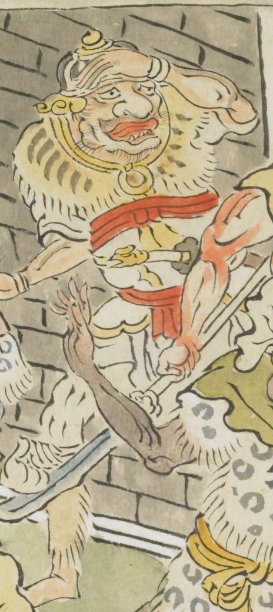

大きな鼻をしており、太い唇の鬼。虎皮の襟巻を着け、頭には兜のようなものをかぶっている。目の上に手をやり、遠くの方を見ているようすである。
出典：親書誌：U426_nichibunken_0079：酒天童子絵巻；シュテンドウジエマキ／日付：2006／資源識別子：U426_nichibunken_0079_0001_0006
Copyright (c)2010- International Research Center for Japanese Studies, Kyoto, Japan. All rights reserved.